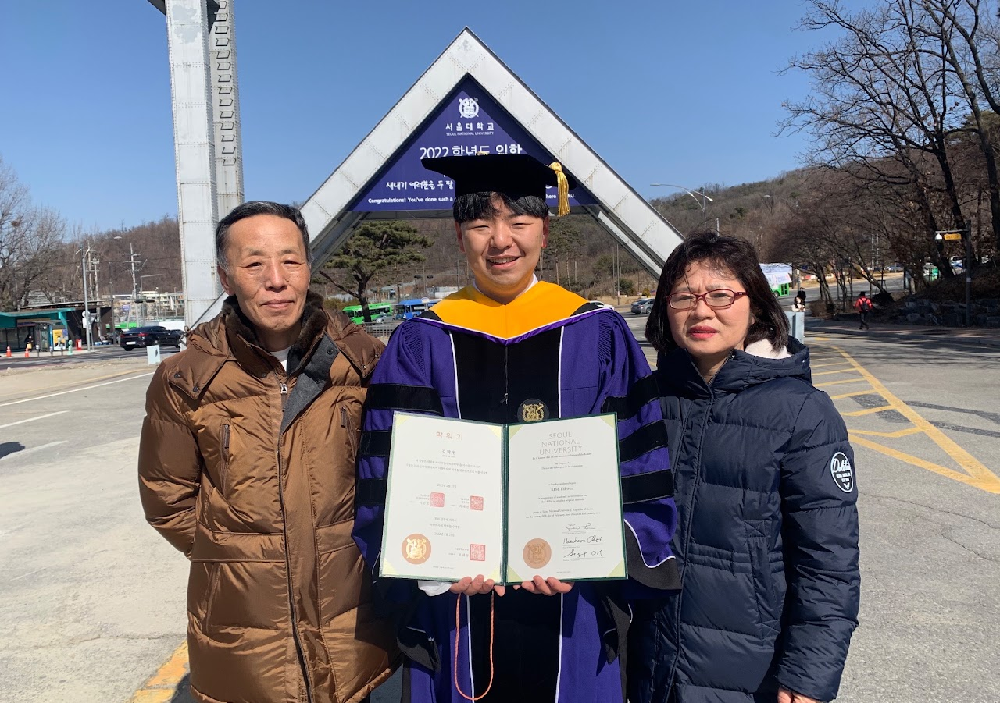
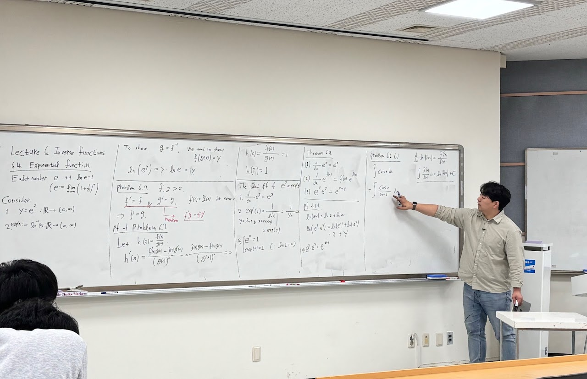
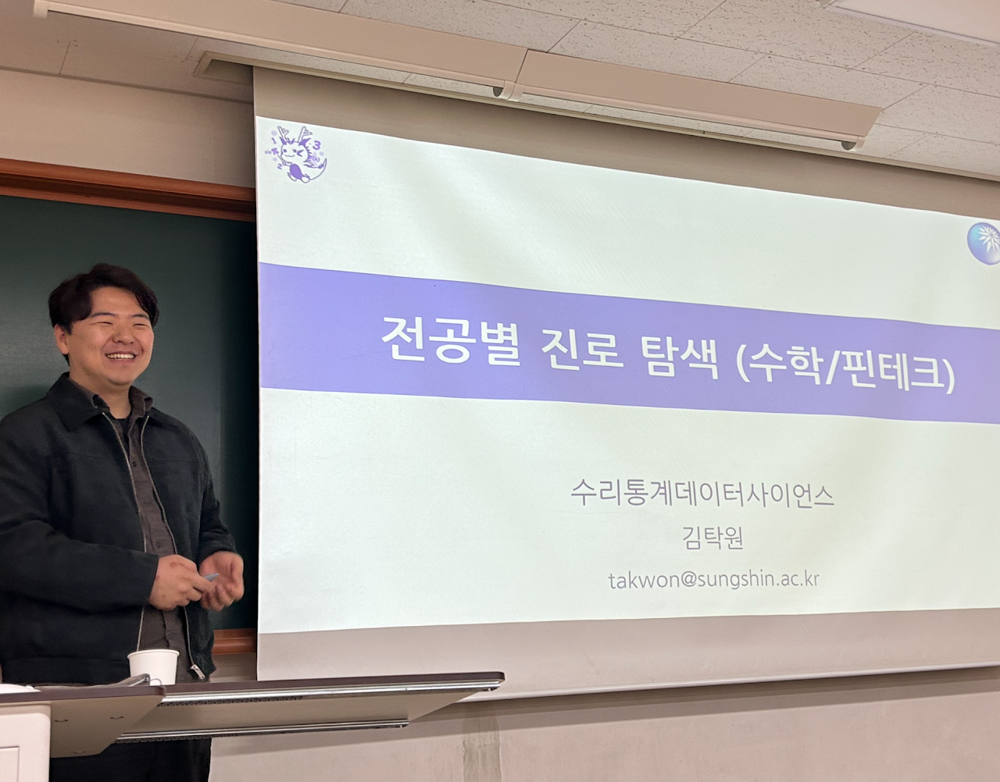
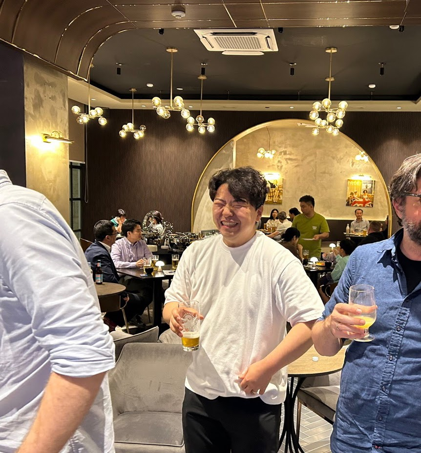
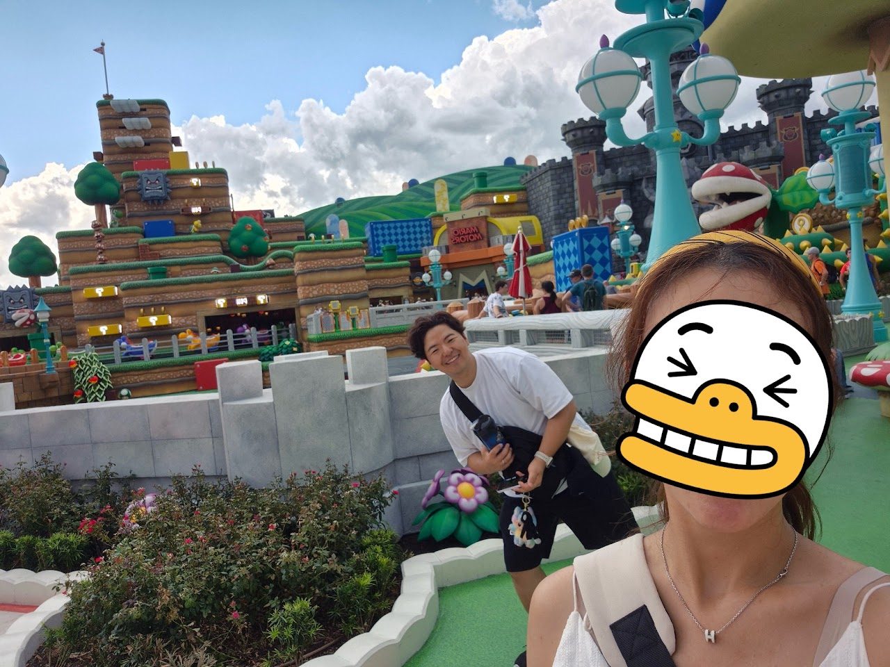
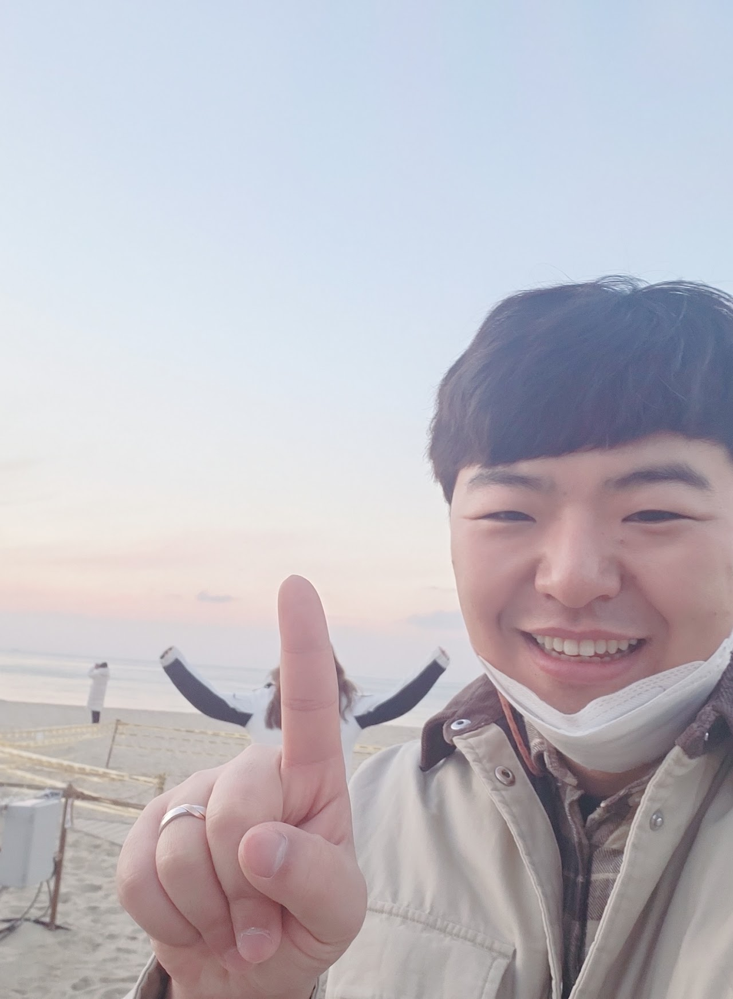
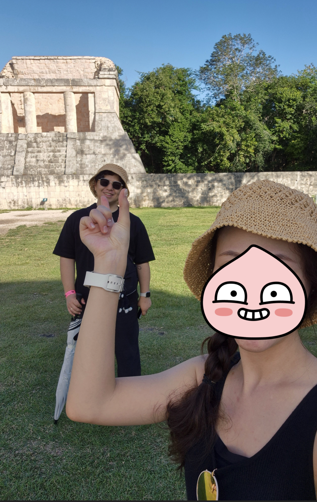

About
Research, academic background, and contact information.
Research & background
I am an Assistant Professor in the School of Mathematics, Statistics and Data Science at Sungshin Women’s University. My research focuses on nonlinear partial differential equations and mathematical finance, with particular interests in regularity theory, free boundary problems, and stochastic control.
In PDEs, I study the regularity and boundary behavior of solutions to degenerate and singular parabolic equations, including the porous medium equation. I am interested in how degeneracy affects the smoothness of solutions and how their behavior near the boundary can be described through precise expansions.
In mathematical finance, I use stochastic control and PDE methods to study portfolio choice, consumption, retirement, and investment decisions. My work examines how constraints, adjustment costs, and irreversibility shape optimal policies. These questions often lead to optimal stopping and singular control problems, with free boundaries separating regions in which different actions are optimal.
In statistics, I have worked on testing differences in dependence structures across multiple high-dimensional data sets. Using Gaussian graphical models, I have developed weighted conditional network tests that incorporate information from other networks. This work combines theoretical analysis with simulation studies and an application to genetic pathway analysis.
I received my Ph.D. in Mathematics from Seoul National University in 2022 under the supervision of Ki-Ahm Lee. Before joining Sungshin Women’s University, I held research positions at Seoul National University and KAIST.
Employment
- Assistant Professor, School of Mathematics, Statistics and Data Science, Sungshin Women's University, 2024.9–Present
- Research Assistant Professor, Stochastic Analysis and Application Research Center, KAIST, 2024.2–2024.08
- Postdoctoral Fellow, Research Institute of Mathematics, Seoul National University, 2022.3–2024.2
Education
- Ph. D. in Mathematics, Seoul National University, 2015.3 - 2022.2 (Advisor: Ki-Ahm Lee)
- B.S. in Mathematics, Seoul National University, 2009.3 - 2015.2 (Minor: Financial Economics, Financial Mathematics)
Fellowships & grants
- Start-Up Research Grant, Sungshin Women's University (H20250024), March 2025–February 2026
- Sejong Science Fellowship, National Research Foundation of Korea (RS-2024-00351151), May 2024–April 2029
- Fellowship for Fundamental Academic Fields, Seoul National University, March 2017–February 2018
Photos






